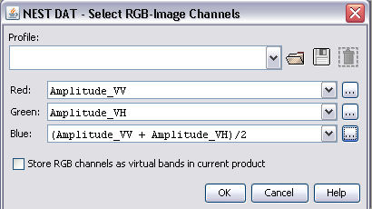
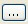

| RGB-Image Profile | |
In this window you are asked to define the RGB channels for a new RGB image view. You are able to load defined RGB-Profiles or to create and store new profiles.

Red - Defines the arithmetical expression for the red channel.
Green - Defines the arithmetical expression for the green channel.
Blue - Defines the arithmetical expression for the blue channel.
Use the  to edit the expression for the specific channel by using the expression editor.
| Name | Type | Description |
|---|---|---|
| name | String | The name of the RGB-Profile, if given it is displayed instead of the file name. |
| internal | Boolean | The default value is false, if given and set to true it indicates that this RGB-Profile can not be deleted from the user interface (but does not prevent from overwriting the file). |
| red or r | String | The arithmetic expression used to create the red channel. This entry is manadatory. |
| green or g | String | The arithmetic expression used to create the green channel. This entry is manadatory. |
| blue or b | String | The arithmetic expression used to create the blue channel. This entry is manadatory. |